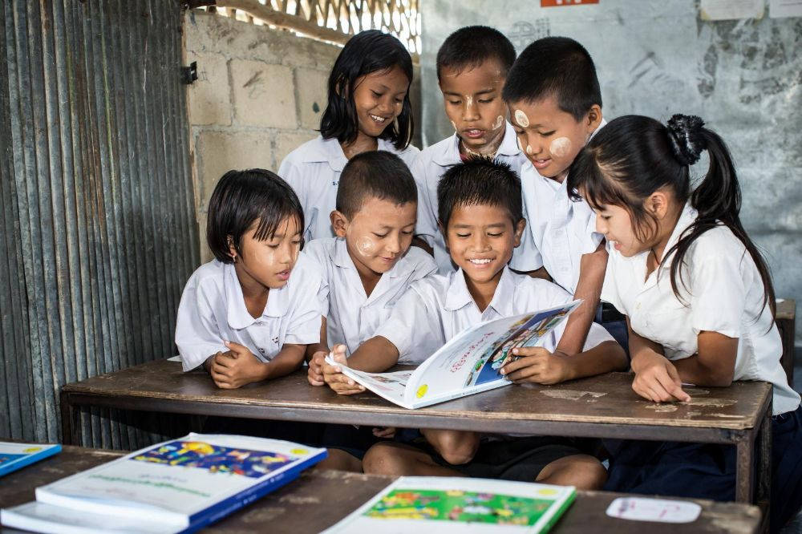
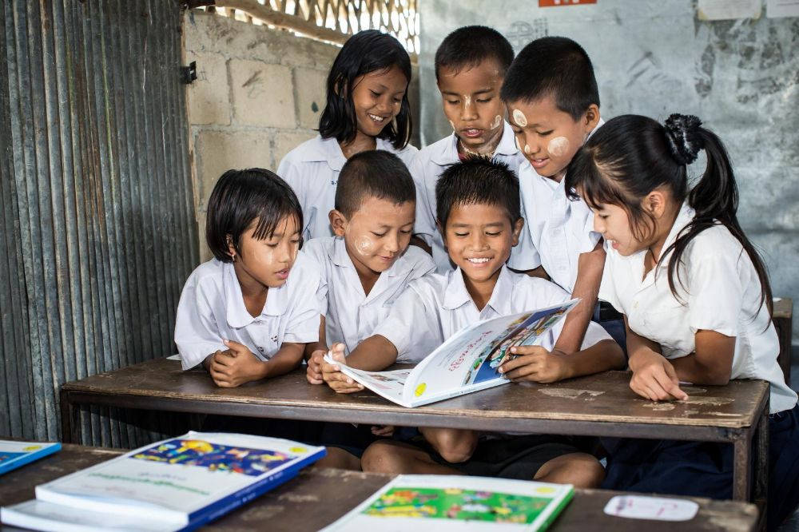

Sustainable Development Goals (SDGs) atau Tujuan Pembangunan Berkelanjutan (TPB) adalah rangkaian tujuan global yang disepakati oleh negara-negara anggota PBB pada tahun 2015 untuk menciptakan dunia yang lebih baik, inklusif, adil, dan berkelanjutan. SDGs mencakup 17 tujuan dan 169 target yang menyoroti isu penting seperti pengentasan kemiskinan, peningkatan kesehatan dan pendidikan, perlindungan lingkungan hidup, serta penguatan kerja sama global.
 

Selain sebagai pedoman pembangunan hingga tahun 2030, SDGs juga menjadi kerangka acuan bagi pemerintah, sekolah, pelaku usaha, komunitas, dan individu dalam berkontribusi terhadap pembangunan berkelanjutan. Agenda ini menegaskan bahwa kesejahteraan manusia harus dicapai sejalan dengan kelestarian lingkungan serta stabilitas sosial.